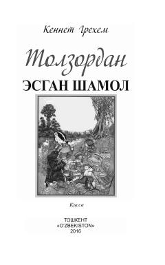

ТЭIngliz klassikasi — bolalar uchun sehrli tabiat va do'stlik qissasi.
Bu kitob mashhur ingliz adibi Kennet Grehemning dunyo bolalari sevib o'qiydigan 'Tolzordan esgan shamol' qissasining Tilаvoldi Jo'raev tomonidan ingliz tilidan qilingan tarjimasi. Asar Toshkentda 'O'zbekiston' NMIU tomonidan 2016-yilda nashr etilgan. Qissa yozuvchining o'g'liga yozgan maktublari asosida vujudga kelgan bo'lib, g'aroyib tabiat va hayvonlar dunyosini tasvirlaydi.